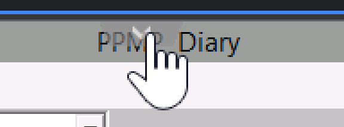
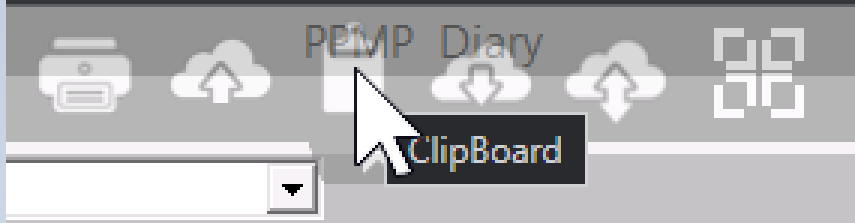
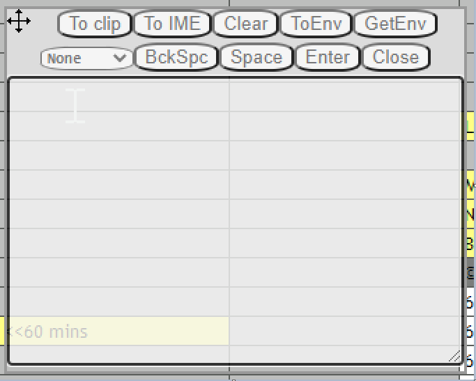
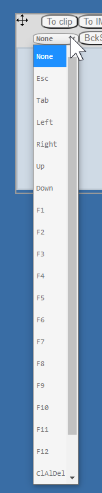

Solved: How to paste into PPMP when using a Mac
TL/DR
In MacOS, when using PPMP Cloud edition, you can paste by using cmd + v -- but here's the trick: you must use your right cmd button.
Copy Paste with PPMP on a Mac
PPMP is "Physiotherapy Practice Management Program". The Cloud edition uses an 'in-browser' virtual machine technology call "tsplus.net" (terminal services plus) to present a virtual machine in a browser.
Here is their guide to doing copy/paste from Mac:
- To paste clipboard text data to session use Ctrl + V, this works mostly on all browsers, on Mac browsers Ctrl button has no effect, there you must use it with Right_CMD + V (left_cmd button not accepted!)
...So on Mac browsers:
Use the right "cmd" button, plus "v", to paste.
ClipBoard tool
One other thing I found -- and maybe others have seen this -- is that there's a few tools that you can get to by clicking the little arrow in the middle of the screen at the top.

When you click that "down" arrow -- it reveals a menu with 6 icons.

- "Print (Ctrl P)"
- "Upload from PC to Server"
- "ClipBoard" (sic)
- "Download From Server to PC"
- "File Manager" and
- "Full screen"
If you click the third one, "ClipBoard" -- it brings up a funny little applet for doing some clipboard and keyboard operations.

Also -- if your keyboard won't insert some particular keystroke into the PPMP virtual desktop browser -- then the dropdown list in this applet can be used to send those key strokes.
